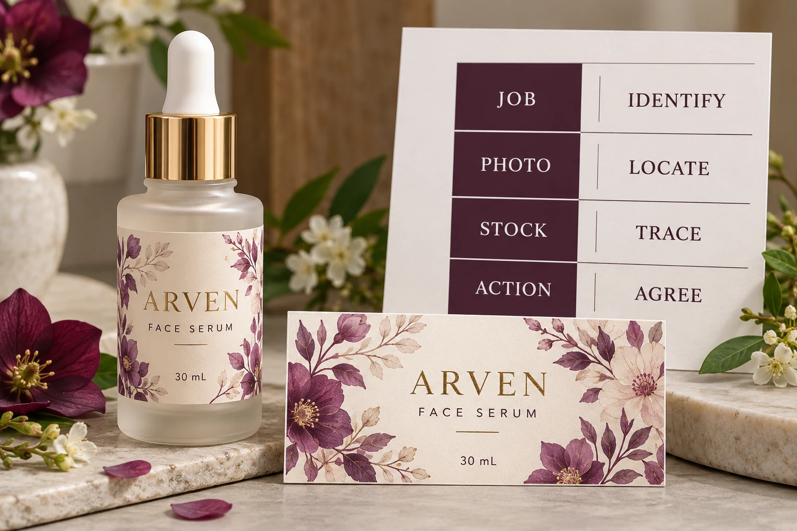

Identify the job and the stock first
Record the order or job reference, product SKU, artwork revision and relevant delivery. Identify the carton, roll or other supplied unit associated with the observation using references actually available on the packaging or documentation.
If a reference is absent, say so. Describe where the sample came from without inventing a roll number or assuming that every carton contains the same affected material. Ask the supplier what additional identification will help connect the sample to its job record.
Keep the sample identifiable while the review is underway. Agree with the responsible site and supplier how the relevant stock and packaging should be retained or made available. Do not destroy the only reference and then rely on an unlabelled photograph.
Show context as well as detail
Take a context photograph that locates the concern on the whole label, supplied unit or bottle, followed by a clear closer view of the observed area. Link both views to the same sample reference. Avoid editing the image in a way that removes the surrounding information the reviewer needs.
Describe the observation plainly. For example, identify the location and what differs from the agreed reference, while distinguishing what you can see from what you suspect caused it. If the concern appears after application, include the relevant container and process information available to the site.
A photo cannot establish every physical property. Where the parties need a sample, a different viewing arrangement or specialist evaluation, record that next requirement rather than claiming that the picture has already proved a cause.
Attach the approved reference, not a convenient preview
Identify the accepted artwork, sample or specification relevant to the concern. Include its revision and approval context so the reviewer can distinguish a production discrepancy from a disagreement between different references.
Our reorder-approval guide explains how to connect a repeated job to the intended version. That traceability is useful here: a screenshot from an older design should not silently become the reference for the newly approved file.
Where the concern involves material or application behavior, provide the actual construction and available conditions. The adhesive sample-plan guide addresses qualification before release. Reporting an observation after delivery is a different task and does not establish that qualification was completed or that a particular party caused the result.
Send one evidence record the parties can use
The YT Labels refund and cancellation policy asks for photos and order details when a production issue is reviewed. The more detailed worksheet below is an editorial way to organize that handoff, not an additional published claim deadline or automatic remedy.
| Record | What to provide | What remains unknown |
|---|---|---|
| Job identity | Order, SKU, revision and relevant delivery | Any missing production reference |
| Stock location | Carton/roll/sample reference and current location | Whether other supplied units are affected |
| Observation | Specific visible difference and where it appears | Cause, unless separately established |
| Images | Matched context and detail views | Properties the photographs cannot demonstrate |
| Conditions | Available storage, application or handling information | Unrecorded stages or changed conditions |
| Reference | Relevant approved file/sample/specification | Which comparison still needs clarification |
| Extent | Known observed stock and separately stated unreviewed stock | Total affected quantity if not established |
| Next action | Requested review, accountable contact and agreed response | Remedy until the parties have reviewed the evidence |
Complete the identity and observation fields first. Add the matched reference and photographs. Separate confirmed information from estimates and questions. Then ask the supplier what further evidence or sample review is required and who will coordinate it.

Do not turn the first sample into a batch conclusion
One hypothetical concern is found on a single identified sample. The buyer can report that observation and request investigation without declaring the whole order affected. Record the rest as unreviewed unless there is a basis for a broader statement.
A different concern has been observed across several separately identified rolls. Provide those references and describe how the observations were made. That broader evidence may change the review scope, but it still does not establish the underlying cause or a contractual remedy by itself.
The distinction is useful for planning. The receiving team needs to know which stock is under review and what remains uncertain. It does not need an unsupported universal defect allowance or an inspection percentage copied from an unrelated project.
Agree the next handling and review step
Ask the relevant parties to confirm what can proceed, what requires further review and how affected stock should be handled while questions remain open. Obtain the actual instruction; this guide supplies no blanket rule that every reported concern requires either continued use or rejection of the entire delivery.
Record the agreed response and any replacement reference after investigation. Acknowledging receipt of photos is not the same as accepting a cause, authorizing a reprint or agreeing a refund. Keep those decisions explicit.
For a question about custom cosmetic bottle labels, use the inquiry form to prepare the order reference, affected SKU and concise observation. Send the matched photos, approved reference and relevant records by email or WhatsApp because the form does not upload attachments. Ask for the next review step and keep the sample traceable until the parties confirm what evidence they need.